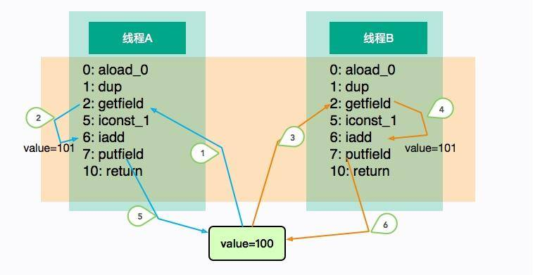
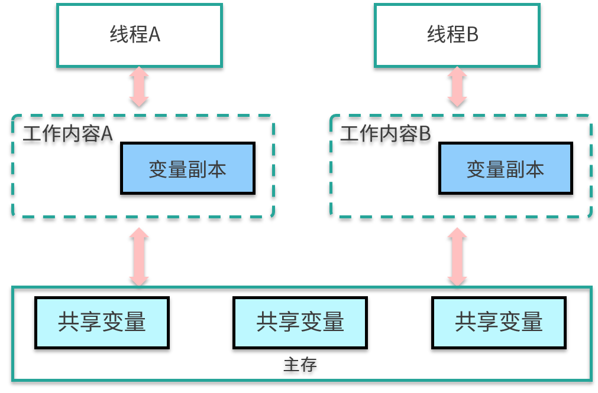

- 00 开篇词：JVM，一块难啃的骨头.md.html
- 01 一探究竟：为什么需要 JVM？它处在什么位置？.md.html
- 02 大厂面试题：你不得不掌握的 JVM 内存管理.md.html
- 03 大厂面试题：从覆盖 JDK 的类开始掌握类的加载机制.md.html
- 04 动手实践：从栈帧看字节码是如何在 JVM 中进行流转的.md.html
- 05 大厂面试题：得心应手应对 OOM 的疑难杂症.md.html
- 06 深入剖析：垃圾回收你真的了解吗？（上）.md.html
- 07 深入剖析：垃圾回收你真的了解吗？（下）.md.html
- 08 大厂面试题：有了 G1 还需要其他垃圾回收器吗？.md.html
- 09 案例实战：亿级流量高并发下如何进行估算和调优.md.html
- 10 第09讲：案例实战：面对突如其来的 GC 问题如何下手解决.md.html
- 11 第10讲：动手实践：自己模拟 JVM 内存溢出场景.md.html
- 12 第11讲：动手实践：遇到问题不要慌，轻松搞定内存泄漏.md.html
- 13 工具进阶：如何利用 MAT 找到问题发生的根本原因.md.html
- 14 动手实践：让面试官刮目相看的堆外内存排查.md.html
- 15 预警与解决：深入浅出 GC 监控与调优.md.html
- 16 案例分析：一个高死亡率的报表系统的优化之路.md.html
- 17 案例分析：分库分表后，我的应用崩溃了.md.html
- 18 动手实践：从字节码看方法调用的底层实现.md.html
- 19 大厂面试题：不要搞混 JMM 与 JVM.md.html
- 20 动手实践：从字节码看并发编程的底层实现.md.html
- 21 动手实践：不为人熟知的字节码指令.md.html
- 22 深入剖析：如何使用 Java Agent 技术对字节码进行修改.md.html
- 23 动手实践：JIT 参数配置如何影响程序运行？.md.html
- 24 案例分析：大型项目如何进行性能瓶颈调优？.md.html
- 25 未来：JVM 的历史与展望.md.html
- 26 福利：常见 JVM 面试题补充.md.html
- 捐赠
19 大厂面试题：不要搞混 JMM 与 JVM
本课时我们主要分析一个大厂面试题：不要搞混 JMM 与 JVM。
在面试的时候，有一个问题经常被问到，那就是 Java 的内存模型，它已经成为了面试中的标配，是非常具有原理性的一个知识点。但是，有不少人把它和 JVM 的内存布局搞混了，以至于答非所问。这个现象在一些工作多年的程序员中非常普遍，主要是因为 JMM 与多线程有关，而且相对于底层而言，很多人平常的工作就是 CRUD，很难接触到这方面的知识。
预警：本课时假设你已经熟悉 Java 并发编程的 API，且有实际的编程经验。如果不是很了解，那么本课时和下一课时的一些内容，可能会比较晦涩。
JMM 概念
在第 02 课时，就已经了解了 JVM 的内存布局，你可以认为这是 JVM 的数据存储模型；但对于 JVM 的运行时模型，还有一个和多线程相关的，且非常容易搞混的概念——Java 的内存模型（JMM，Java Memory Model）。
我们在 Java 的内存布局课时（第02课时）中，还了解了 Java 的虚拟机栈，它和线程相关，也就是我们的字节码指令其实是靠操作栈来完成的。现在，用一小段代码，来看一下这个执行引擎的一些特点。
import java.util.stream.IntStream;
public class JMMDemo {
int value = 0;
void add() {
value++;
}
public static void main(String[] args) throws Exception {
final int count = 100000;
final JMMDemo demo = new JMMDemo();
Thread t1 = new Thread(() -> IntStream.range(0, count).forEach((i) -> demo.add()));
Thread t2 = new Thread(() -> IntStream.range(0, count).forEach((i) -> demo.add()));
t1.start();
t2.start();
t1.join();
t2.join();
System.out.println(demo.value);
上面的代码没有任何同步块，每个线程单独运行后，都会对 value 加 10 万，但执行之后，大概率不会输出 20 万。深层次的原因，我们将使用 javap 命令从字节码层面找一下。
void add();
descriptor: ()V
flags:
Code:
stack=3, locals=1, args_size=1
0: aload_0
1: dup
2: getfield #2 // Field value:I
5: iconst_1
6: iadd
7: putfield #2 // Field value:I
10: return
LineNumberTable:
line 7: 0
line 8: 10
LocalVariableTable:
Start Length Slot Name Signature
0 11 0 this LJMMDemo;
着重看一下 add 方法，可以看到一个简单的 i++ 操作，竟然有这么多的字节码，而它们都是傻乎乎按照“顺序执行”的。当它自己执行的时候不会有什么问题，但是如果放在多线程环境中，执行顺序就变得不可预料了。

上图展示了这个乱序的过程。线程 A 和线程 B“并发”执行相同的代码块 add，执行的顺序如图中的标号，它们在线程中是有序的（1、2、5 或者 3、4、6），但整体顺序是不可预测的。
线程 A 和 B 各自执行了一次加 1 操作，但在这种场景中，线程 B 的 putfield 指令直接覆盖了线程 A 的值，最终 value 的结果是 101。
上面的示例仅仅是字节码层面上的，更加复杂的是，CPU 和内存之间同样存在一致性问题。很多人认为 CPU 是一个计算组件，并没有数据一致性的问题。但事实上，由于内存的发展速度跟不上 CPU 的更新，在 CPU 和内存之间，存在着多层的高速缓存。
原因就是由于多核所引起的，这些高速缓存，往往会有多层。如果一个线程的时间片跨越了多个 CPU，那么同样存在同步的问题。
另外，在执行过程中，CPU 可能也会对输入的代码进行乱序执行优化，Java 虚拟机的即时编译器也有类似的指令重排序优化。整个函数的执行步骤就分的更加细致，看起来非常的碎片化（比字节码指令要细很多）。

不管是字节码的原因，还是硬件的原因，在粗粒度上简化来看，比较浅显且明显的因素，那就是线程 add 方法的操作并不是原子性的。
为了解决这个问题，我们可以在 add 方法上添加 synchronized 关键字，它不仅保证了内存上的同步，而且还保证了 CPU 的同步。这个时候，各个线程只能排队进入 add 方法，我们也能够得到期望的结果 102。
synchronized void add() {
value++;
}

讲到这里，Java 的内存模型就呼之欲出了。JMM 是一个抽象的概念，它描述了一系列的规则或者规范，用来解决多线程的共享变量问题，比如 volatile、synchronized 等关键字就是围绕 JMM 的语法。这里所说的变量，包括实例字段、静态字段，但不包括局部变量和方法参数，因为后者是线程私有的，不存在竞争问题。
JVM 试图定义一种统一的内存模型，能将各种底层硬件，以及操作系统的内存访问差异进行封装，使 Java 程序在不同硬件及操作系统上都能达到相同的并发效果。
JMM 的结构
JMM 分为主存储器（Main Memory）和工作存储器（Working Memory）两种。
- 主存储器是实例位置所在的区域，所有的实例都存在于主存储器内。比如，实例所拥有的字段即位于主存储器内，主存储器是所有的线程所共享的。
- 工作存储器是线程所拥有的作业区，每个线程都有其专用的工作存储器。工作存储器存有主存储器中必要部分的拷贝，称之为工作拷贝（Working Copy）。
在这个模型中，线程无法对主存储器直接进行操作。如下图，线程 A 想要和线程 B 通信，只能通过主存进行交换。

那这些内存区域都是在哪存储的呢？如果非要有个对应的话，你可以认为主存中的内容是 Java 堆中的对象，而工作内存对应的是虚拟机栈中的内容。但实际上，主内存也可能存在于高速缓存，或者 CPU 的寄存器上；工作内存也可能存在于硬件内存中，我们不用太纠结具体的存储位置。
8 个 Action
操作类型
为了支持 JMM，Java 定义了 8 种原子操作（Action），用来控制主存与工作内存之间的交互。
（1）read（读取）作用于主内存，它把变量从主内存传动到线程的工作内存中，供后面的 load 动作使用。
（2）load（载入）作用于工作内存，它把 read 操作的值放入到工作内存中的变量副本中。
（3）store（存储）作用于工作内存，它把工作内存中的一个变量传送给主内存中，以备随后的 write 操作使用。
（4）write （写入）作用于主内存，它把 store 传送值放到主内存中的变量中。
（5）use（使用）作用于工作内存，它把工作内存中的值传递给执行引擎，每当虚拟机遇到一个需要使用这个变量的指令时，将会执行这个动作。
（6）assign（赋值）作用于工作内存，它把从执行引擎获取的值赋值给工作内存中的变量，每当虚拟机遇到一个给变量赋值的指令时，执行该操作。
（7）lock（锁定）作用于主内存，把变量标记为线程独占状态。
（8）unlock（解锁）作用于主内存，它将释放独占状态。

如上图所示，把一个变量从主内存复制到工作内存，就要顺序执行 read 和 load；而把变量从工作内存同步回主内存，就要顺序执行 store 和 write 操作。
三大特征
（1）原子性
JMM 保证了 read、load、assign、use、store 和 write 六个操作具有原子性，可以认为除了 long 和 double 类型以外，对其他基本数据类型所对应的内存单元的访问读写都是原子的。
如果想要一个颗粒度更大的原子性保证，就可以使用 lock 和 unlock 这两个操作。
（2）可见性
可见性是指当一个线程修改了共享变量的值，其他线程也能立即感知到这种变化。
我们从前面的图中可以看到，要保证这种效果，需要经历多次操作。一个线程对变量的修改，需要先同步给主内存，赶在另外一个线程的读取之前刷新变量值。
volatile、synchronized、final 和锁，都是保证可见性的方式。
这里要着重提一下 volatile，因为它的特点最显著。使用了 volatile 关键字的变量，每当变量的值有变动时，都会把更改立即同步到主内存中；而如果某个线程想要使用这个变量，则先要从主存中刷新到工作内存上，这样就确保了变量的可见性。
而锁和同步关键字就比较好理解一些，它是把更多个操作强制转化为原子化的过程。由于只有一把锁，变量的可见性就更容易保证。
（3）有序性
Java 程序很有意思，从上面的 add 操作可以看出，如果在线程中观察，则所有的操作都是有序的；而如果在另一个线程中观察，则所有的操作都是无序的。
除了多线程这种无序性的观测，无序的产生还来源于指令重排。
指令重排序是 JVM 为了优化指令，来提高程序运行效率的，在不影响单线程程序执行结果的前提下，按照一定的规则进行指令优化。在某些情况下，这种优化会带来一些执行的逻辑问题，在并发执行的情况下，按照不同的逻辑会得到不同的结果。
我们可以看一下 Java 语言中默认的一些“有序”行为，也就是先行发生（happens-before）原则，这些可能在写代码的时候没有感知，因为它是一种默认行为。
先行发生是一个非常重要的概念，如果操作 A 先行发生于操作 B，那么操作 A 产生的影响能够被操作 B 感知到。
下面的原则是《Java 并发编程实践》这本书中对一些法则的描述。
- 程序次序：一个线程内，按照代码顺序，写在前面的操作先行发生于写在后面的操作。
- 监视器锁定：unLock 操作先行发生于后面对同一个锁的 lock 操作。
- volatile：对一个变量的写操作先行发生于后面对这个变量的读操作。
- 传递规则：如果操作 A 先行发生于操作 B，而操作 B 又先行发生于操作 C，则可以得出操作 A 先行发生于操作 C。
- 线程启动：对线程 start() 的操作先行发生于线程内的任何操作。
- 线程中断：对线程 interrupt() 的调用先行发生于线程代码中检测到中断事件的发生，可以通过 Thread.interrupted() 方法检测是否发生中断。
- 线程终结规则：线程中的所有操作先行发生于检测到线程终止，可以通过 Thread.join()、Thread.isAlive() 的返回值检测线程是否已经终止。
- 对象终结规则：一个对象的初始化完成先行发生于它的 finalize() 方法的开始。
内存屏障
那我们上面提到这么多规则和特性，是靠什么保证的呢？
内存屏障（Memory Barrier）用于控制在特定条件下的重排序和内存可见性问题。JMM 内存屏障可分为读屏障和写屏障，Java 的内存屏障实际上也是上述两种的组合，完成一系列的屏障和数据同步功能。Java 编译器在生成字节码时，会在执行指令序列的适当位置插入内存屏障来限制处理器的重排序。
下面介绍一下这些组合。
Load-Load Barriers
保证 load1 数据的装载优先于 load2 以及所有后续装载指令的装载。对于 Load Barrier 来说，在指令前插入 Load Barrier，可以让高速缓存中的数据失效，强制重新从主内存加载数据。
load1
LoadLoad
load2
Load-Store Barriers
保证 load1 数据装载优先于 store2 以及后续的存储指令刷新到内存。
load1
LoadStore
store2
Store-Store Barriers
保证 store1 数据对其他处理器可见，优先于 store2 以及所有后续存储指令的存储。对于 Store Barrier 来说，在指令后插入 Store Barrier，能让写入缓存中的最新数据更新写入主内存，让其他线程可见。
store1
StoreStore
store
Store-Load Barriers
在 Load2 及后续所有读取操作执行前，保证 Store1 的写入对所有处理器可见。这条内存屏障指令是一个全能型的屏障，它同时具有其他 3 条屏障的效果，而且它的开销也是四种屏障中最大的一个。
store1
StoreLoad
load2
小结
好了，到这里我们已经简要地介绍完了 JMM 相关的知识点。前面提到过，“请谈一下 Java 的内存模型”这个面试题非常容易被误解，甚至很多面试官自己也不清楚这个概念。其实，如果我们把 JMM 叫作“Java 的并发内存模型”，会更容易理解。
这个时候，可以和面试官确认一下，问的是 Java 内存布局，还是和多线程相关的 JMM，如果不是 JMM，你就需要回答一下第 02 课时的相关知识了。
JMM 可以说是 Java 并发的基础，它的定义将直接影响多线程实现的机制，如果你想要深入了解多线程并发中的相关问题现象，对 JMM 的深入研究是必不可少的。
© 2019 - 2023 Liangliang Lee. Powered by gin and hexo-theme-book.